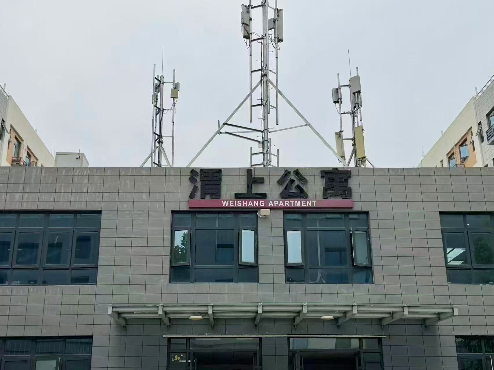
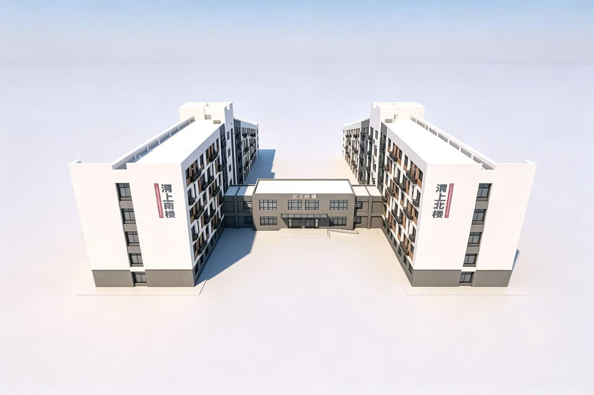
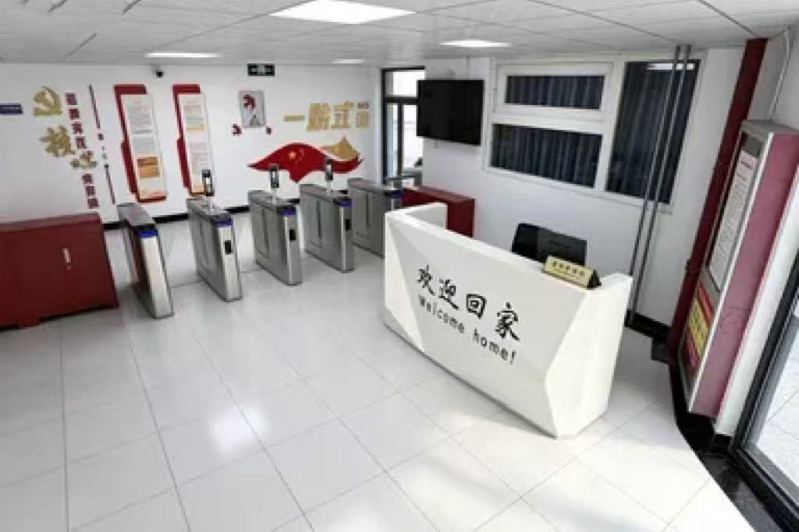
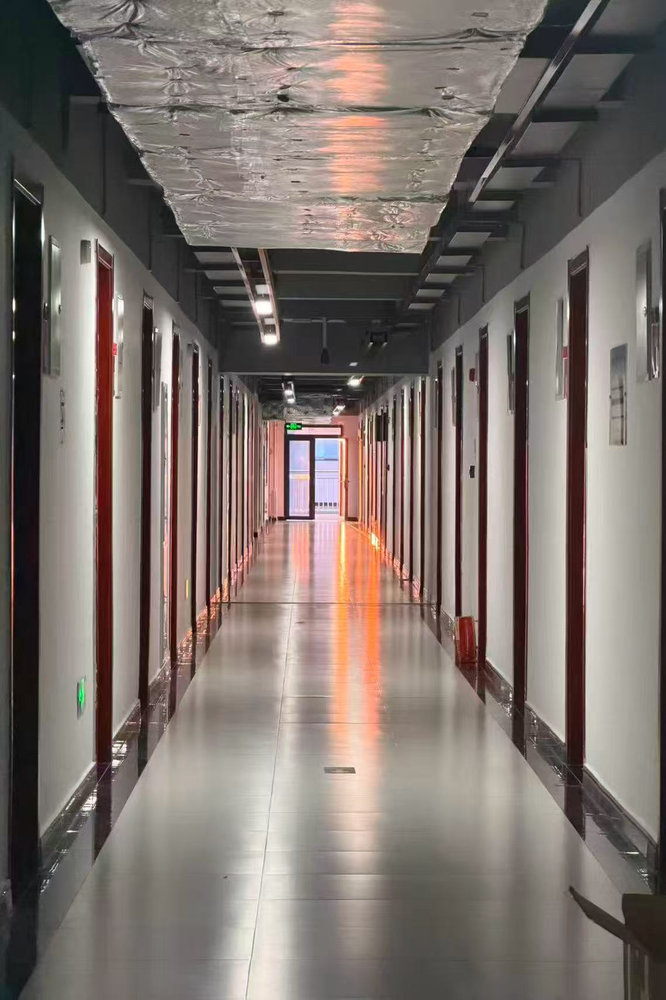
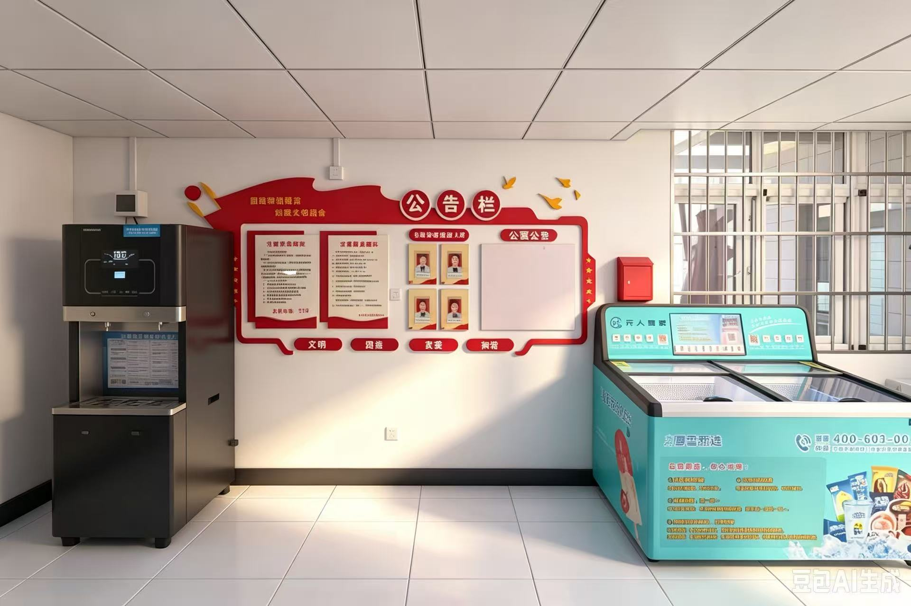
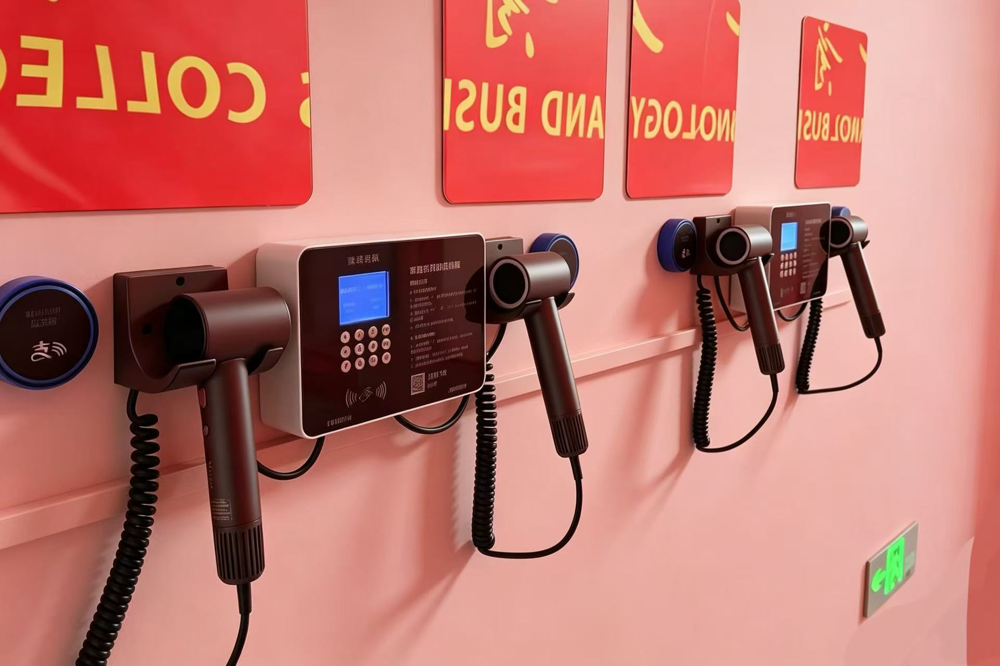
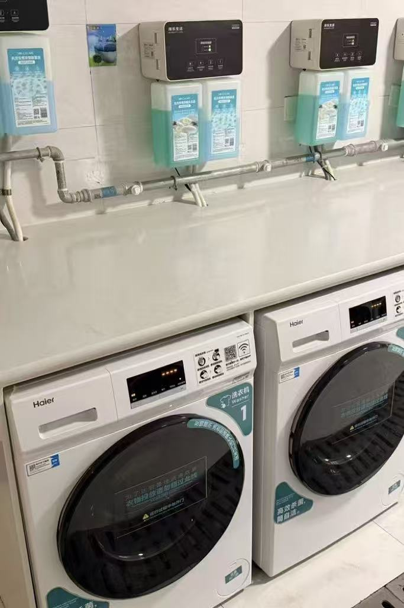
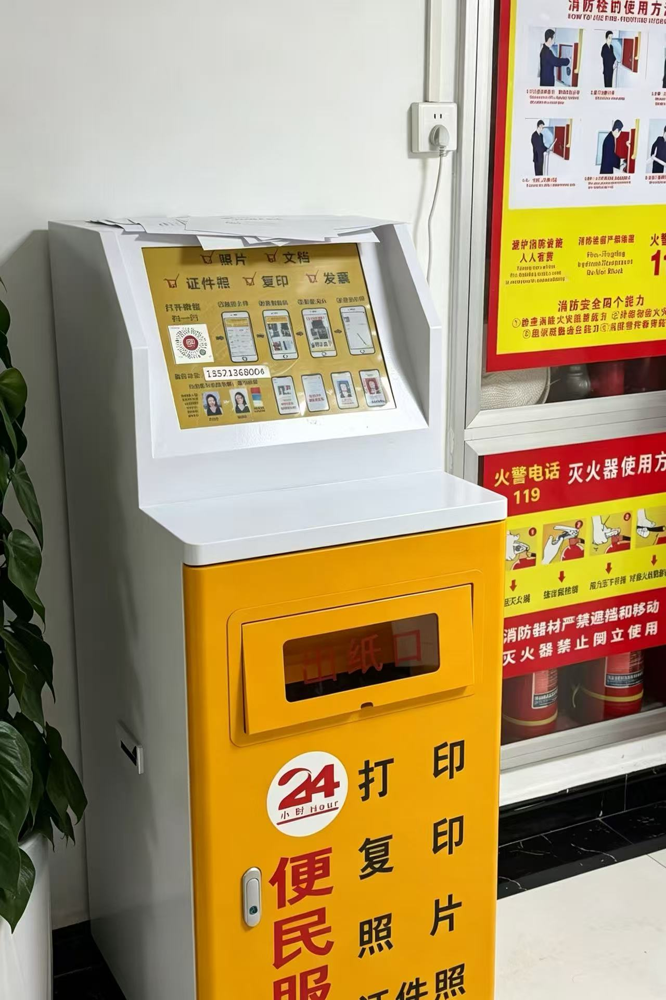
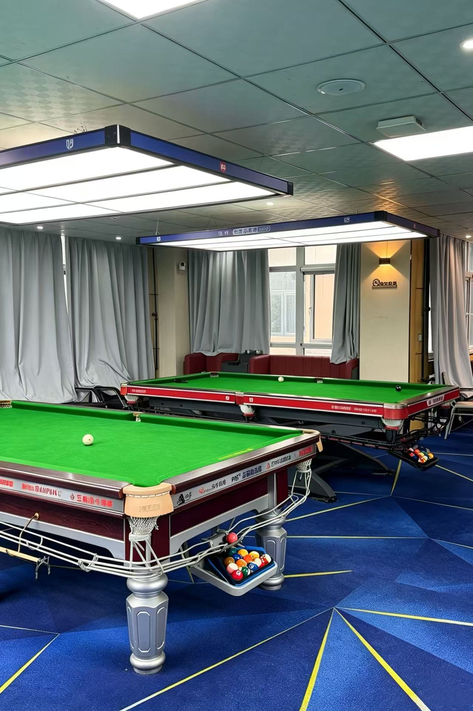
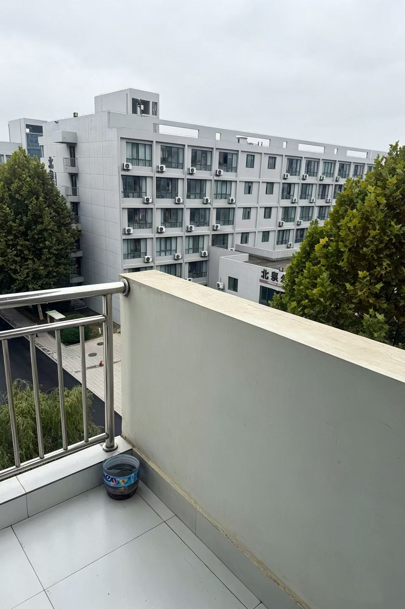

A HOME ON CAMPUS
住下，也安心。
简洁的楼宇、齐全的生活配套，让渭上公寓成为我们在校园里的家。上完课回到这里，学习与生活便有了安稳的落脚处。
With its simple architecture and practical amenities, Weishang Apartment is our home on campus — a familiar place to return to after class.
校园生活影像 / CAMPUS LIVING
A place to call home.
在课堂之外，找到生活的节奏。
走进渭上公寓，看看我们熟悉的校园日常。
Beyond the classroom, a rhythm of our own.
A glimpse of everyday life at Weishang Apartment.

01初见渭上THE WELCOME
Every day begins with a familiar welcome.

A HOME ON CAMPUS
简洁的楼宇、齐全的生活配套，让渭上公寓成为我们在校园里的家。上完课回到这里，学习与生活便有了安稳的落脚处。
With its simple architecture and practical amenities, Weishang Apartment is our home on campus — a familiar place to return to after class.

A FAMILIAR WELCOME
刷脸通行的闸机旁，前台的一句“欢迎回家”格外亲切。宿管阿姨的日常照看、清晰的安全提示与服务信息，把关怀落在细节里。
Beyond the facial-recognition gates, a “Welcome Home” sign greets us at reception. Residence staff, clear safety notices and service information help us feel looked after.

THE WAY BACK
规整的走廊连着一间间宿舍。整洁的墙面、平整的地面，是每天出发与归来的熟悉背景。
A neat corridor connects the rooms we call our own. Clean walls and smooth floors form the familiar backdrop to our daily comings and goings.
02生活有序THE EVERYDAY
Simple comforts. Thoughtful details.

CLOSE AT HAND
接一杯水，买一支雪糕，顺便看看最新通知。饮水机、自助售卖冰柜与公告栏，让一楼大厅成为日常生活里顺手的一站。
Fill a cup, pick up an ice cream, catch up on the latest notices. The water dispenser, self-service freezer and notice board make everyday essentials easy to find.
一楼大厅 / FIRST FLOOR

每层设有四台壁挂式共享吹风机，让洗漱后的打理更方便。
Four wall-mounted shared hair dryers on each floor make it easy to dry your hair and get ready.

共享滚筒洗衣机配有自动供液装置和杀菌功能，扫码即可开启日常洗衣。
Shared front-loading washers offer automatic detergent dispensing and a sanitizing cycle. Simply scan the QR code to get started.

自助设备支持打印、复印与证件照服务，扫码操作，方便随时处理学习资料。
Available around the clock, the self-service kiosk handles printing, copying and ID photos — just scan the QR code to begin.
03课余有光THE PAUSE
Room to unwind, space to breathe.

AFTER CLASS, AT EASE
二楼台球厅里，灯光明亮，球桌整齐。约上同学打几局，或坐在沙发上歇一会儿，让课余时光轻松下来。
On the second floor, well-lit tables and comfortable sofas set a relaxed pace. A few games with friends, or a quiet break between them — a simple way to unwind after class.
A MOMENT OF QUIET
风经过阳台，
日子慢了一点。

独立阳台带来采光与通风，也留出晾晒衣物的空间。看一眼窗外的楼宇与绿树，是忙碌日常里小小的放松。
Our private balcony brings in daylight and fresh air, with room to hang laundry. Beyond it, campus buildings and leafy trees offer a quiet moment in a busy day.
OUR CAMPUS. OUR EVERYDAY.
寻常日子，也值得好好珍藏。
There is something special in the everyday.
回到故事的开始 BACK TO THE BEGINNING